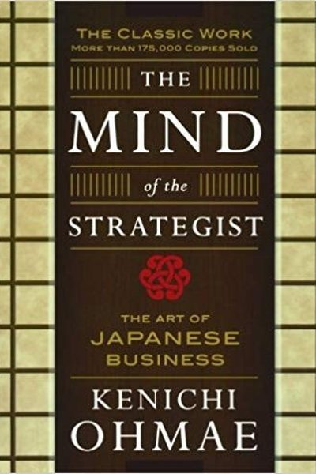

Library › Power & Strategy
The Mind of the Strategist — Summary & Key Lessons

The Japanese art of business strategy — the book McKinsey's most famous partner wrote about thinking, not planning.
📖 OPEN THE FULL INTERACTIVE BREAKDOWN →🌐 Read it in Hindi, Hinglish, Gujarati, Tamil & 22 more languages — free, with audio.
💡 The Big Idea
Kenichi Ohmae — the legendary McKinsey partner who built the firm's Japan practice — argued that strategy is fundamentally an art of thinking, not a science of planning. The strategist's mind combines logical analysis with 'strategic imagination': the ability to reframe problems, break free of industry assumptions, and see the customer's real needs. His framework: strategy = customer + competitors + company (the strategic triangle), and the decisive work is finding the key factor for success (KFS) in your business.
🧠 The 6 Key Lessons
Lesson 1: Strategy Is a Mind, Not a Plan
The Strategic Mind
Ohmae's opening distinction: most 'strategy' is planning — extrapolating current numbers forward. Real strategy is a state of mind: a relentless refusal to accept the obvious, a habit of asking 'what if we reversed this assumption?' The strategic mind combines analysis (logic) with imagination (insight), and it treats every industry assumption as a question, not a fact.
📖 Example: Japanese companies Ohmae advised repeatedly beat bigger Western rivals not with more resources but with reframed problems: a copier maker asked 'why must copiers be sold through dealers?' and built a direct-sales advantage no one else had considered. Read the full example →
⚡ Do this: Write the three 'obvious truths' of your industry. Ask of each: 'What if it were false?' Spend one hour playing with the answers.
Lesson 2: The Strategic Triangle: Customer, Company, Competitor
The Strategic Triangle
Ohmae's core framework: strategy is the match between three players — the customer (whose needs define the game), the company (whose resources you deploy), and the competitors (who fight for the same customers). A strategy succeeds when it creates a superior fit among the three: serve the customer better than competitors while using your resources better than they can copy.
📖 Example: Ohmae shows how Japanese consumer-electronics firms won by out-matching this triangle: understanding customers' real needs (portability, reliability), deploying unique resources (miniaturization skills), and choosing competitive arenas where rivals'… Read the full example →
⚡ Do this: Draw the triangle for your business: customer needs, your resources, competitor strengths. Where is the misfit? Fix the worst one this quarter.
Lesson 3: Find the Key Factor for Success (KFS)
Key Factors for Success
In every industry, a few factors determine success — the KFS: cost in commodity industries, brand in luxury, technology in pharma, distribution in consumer goods. The strategist's job is to identify the 2–3 factors that actually decide the game and concentrate resources there, instead of spreading effort evenly across everything.
📖 Example: Ohmae's case: in shipbuilding, the KFS shifted from cheap labor to productivity; companies that spotted the shift and re-invested accordingly survived the shakeout while those that kept playing the old game vanished. Read the full example →
⚡ Do this: List what your industry's winners actually do differently — not what everyone says matters. Identify your top 2 KFS and reallocate your next month's effort to them.
Lesson 4: Break the Fixed Ideas
Freeing the Mind
The mind of the strategist is an enemy of 'fixed ideas' — the industry truisms that everyone accepts and nobody questions: 'customers want more features,' 'price is everything,' 'we need a dealer network.' Ohmae's method: challenge the fixed idea with a thought experiment — 'if we could start from zero, how would we design this?' The most powerful strategies are born from breaking the frame.
📖 Example: Ohmae describes how a dairy company broke the fixed idea 'milk must be delivered in glass bottles' and created a new packaging-based advantage; and how restaurants that questioned 'customers must be served at tables' created the fast-food industry. Read the full example →
⚡ Do this: List five fixed ideas in your field. For each, run the 'start from zero' thought experiment. Capture one fresh angle per idea.
Lesson 5: Use Head-On and Indirect Attacks Wisely
Strategic Attacks
Ohmae's competitive doctrine: attack where the competitor's strength is least relevant. Direct head-on attacks are for those with overwhelming superiority; everyone else should outflank — different segments, different needs, different channels. The goal is always to make the competitor's advantages irrelevant, not to fight them on their terms.
📖 Example: Honda entered the US motorcycle market not by fighting Harley's big bikes but by owning the small-displacement segment Harley ignored — the flanking move that built the beachhead for everything that followed. Read the full example →
⚡ Do this: Map your competitor's strongest arena. Choose an adjacent arena where their strength doesn't transfer — and enter there first.
Lesson 6: Strategy Is a Point of View, Not a Department
The Strategic Triangle
Ohmae's premise: strategy is not a planning exercise but a way of seeing — a mental frame that constantly compares your company, customers and competitors. The strategist thinks in terms of relative advantage: not 'are we good?' but 'are we better than the alternative the customer can choose?' Strategy lives in the mind of the leader before it lives in any document.
📖 Example: Ohmae's strategic triangle — company, customer, competitor — forces every decision through the question of relative position. A product that is excellent in isolation but worse than a rival's on price or features is strategically weak, no matter how good the… Read the full example →
⚡ Do this: For your main offering, write three lines: what customers value most, how your competitor delivers it, and where you beat them — then attack the gap.
✅ 5-Step Action Plan
- Question three 'obvious truths' of your industry this week.
- Draw your strategic triangle and fix the worst misfit.
- Identify your 2 KFS and concentrate next month's effort there.
- Break one fixed idea with the 'start from zero' thought experiment.
- Plan a flanking move into an arena where the competitor's strength dies.
⚠️ When This Doesn't Work
Ohmae's 'strategist thinks in systems' is the most elegant strategy book from Japan — and Constantinople is the proof that the best strategist cannot save a system that won't change: the city's defenders strategised brilliantly for a thousand years — walls, alliances, logistics — and each generation's strategy was perfect for the last siege, until cannons arrived and the walls that had never failed became the trap. Ohmae's systems thinking is only as good as its willingness to question the system itself. The strategist's first question must be: what am I assuming will never change?
💀 The Graveyard Proves It
🚪 Constantinople — The Empire That Fell Through an Unlocked Door. Burn: A 1,000-year empire. Read the full case study →
💬 Best Quotes from The Mind of the Strategist
- “In the final analysis, the means of competition are the products and the corporations... but the real competition is between business strategies.”
- “The strategist's goal is to achieve a decisive competitive advantage by combining a clear perception of the market with the company's resources.”
- “Business strategy is the art of using a given set of resources to achieve a decisive advantage.”
Interactive version: mark lessons as read, listen in your language, share quote cards.